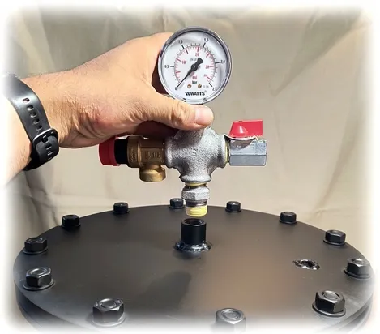
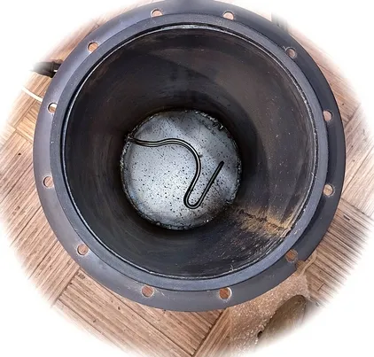
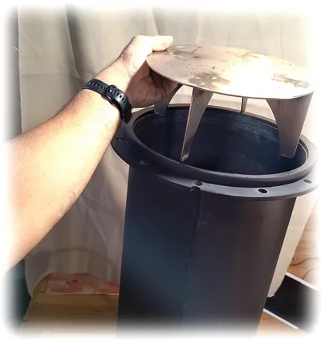
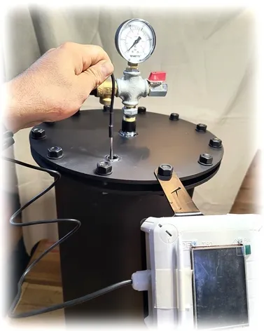
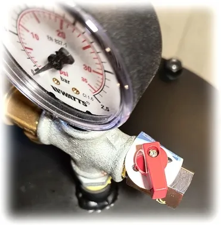
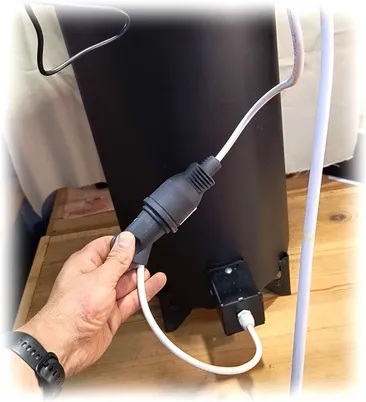
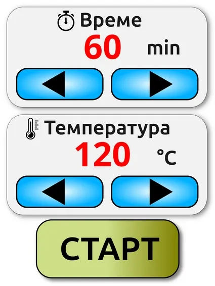
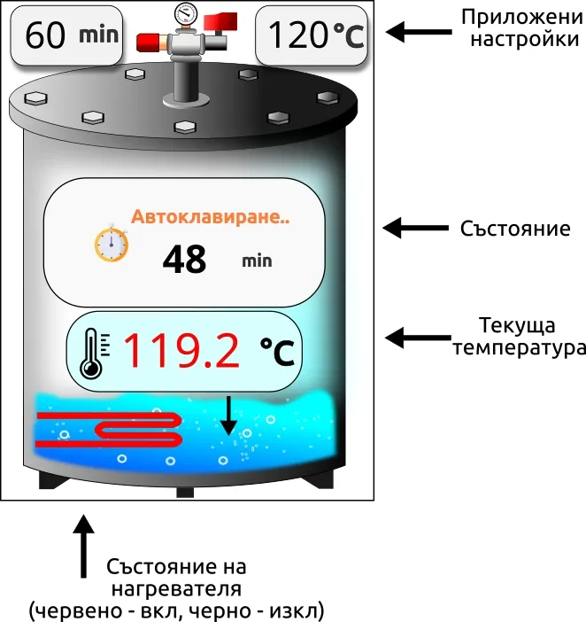
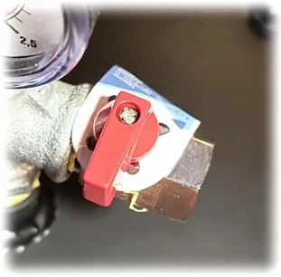

Работа с автоклава
От зареждането до отварянето на капака — всяка стъпка по реда си.
Прочетете ръководството преди първа употреба. Автоклавът работи под налягане — никога не развивайте болтовете на капака, докато уредът е горещ или манометърът показва налягане.
Подготовка и зареждане
-
Монтирайте групата с манометъра и крана
Навийте групата с манометъра, предпазния клапан и крана върху щуцера на капака.

-
Отворете автоклава
Развийте гайките на капака и го свалете. На дъното на съда е разположен електрическият нагревател.

-
Поставете подложката за бурканите
Спуснете подложката на дъното, върху нагревателя, с краката надолу.

-
Налейте вода
Напълнете с вода до около 1 см под подложката. Нагревателят трябва да е потопен.
-
Заредете бурканите
Наредете бурканите върху подложката, един върху друг.
-
Затворете капака
Поставете капака така, че заварената на него тръба за сензора да попадне в свободното пространство между бурканите.

-
Затегнете и монтирайте контролера
Затегнете гайките последователно „на кръст“, равномерно. На един от болтовете закрепете скобата на контролера, след което вкарайте температурния сензор докрай в тръбата на капака.
-
Отворете съвсем малко крана
Ръкохватката застава под ъгъл спрямо тръбата. През него излиза въздухът при загряването.

-
Свържете захранването
Включете кабела на нагревателя в изхода на контролера, след което включете контролера в мрежата.
Контактът трябва да е надежден, с добро заземяване. Не използвайте тънки удължители и разклонители — нагревателят е мощен консуматор.

Работа с контролера
-
Настройка на режима
След включване контролерът показва екран с настройки. Със стрелките задайте:
- Време — продължителността на автоклавирането в минути;
- Температура — температурата на автоклавиране в °C.
Стойностите се задават според рецептата на продукта. Натиснете СТАРТ, за да започне програмата.


Протичане на цикъла
-
Загряване
Нагревателят работи, водата се загрява. Кранът е отворен леко — през него излиза въздухът и пара.
-
Затворете крана
При достигане на 97 °C контролерът изписва да затворите крана. Завъртете ръкохватката напречно на тръбата, докрай.

-
Изчакване
Съдът е затворен и температурата се повишава над 100 °C заедно с налягането, до зададената стойност.
-
Автоклавиране
Достигната е зададената температура и започва отброяване на зададените минути. Контролерът поддържа температурата, като включва и изключва нагревателя.
-
Готово
Цикълът е завършил и нагревателят е изключен. Оставете автоклава да се охлади сам.
Охлаждане и отваряне
-
Охладете и отворете
След съобщението „Готово!“ оставете автоклава да се охлади. Капакът може да се отвори едва когато температурата падне под 60 °C. Първо отворете крана, изчакайте да се изравнят наляганията и чак тогава развийте гайките на капака.
Безопасност
- Не включвайте нагревателя без вода в съда.
- Не блокирайте и не запушвайте предпазния клапан.
- Включвайте контролера само в изправен заземен контакт; пазете го от пряка пара и заливане с вода.
- Бурканите трябва да са с винтова капачка и не трябва да се препълват.
- Внимавайте при отваряне — парата причинява тежки изгаряния. Използвайте ръкавици при изваждане на бурканите.